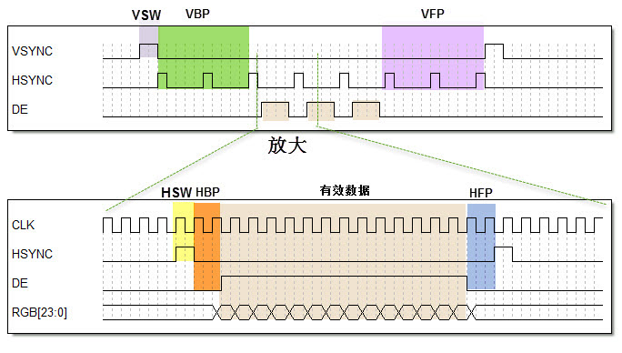
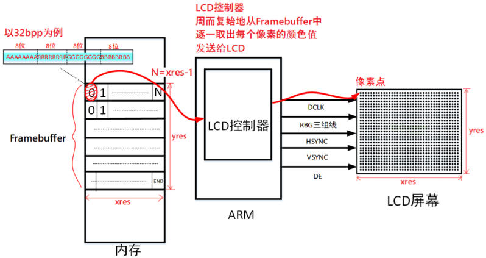
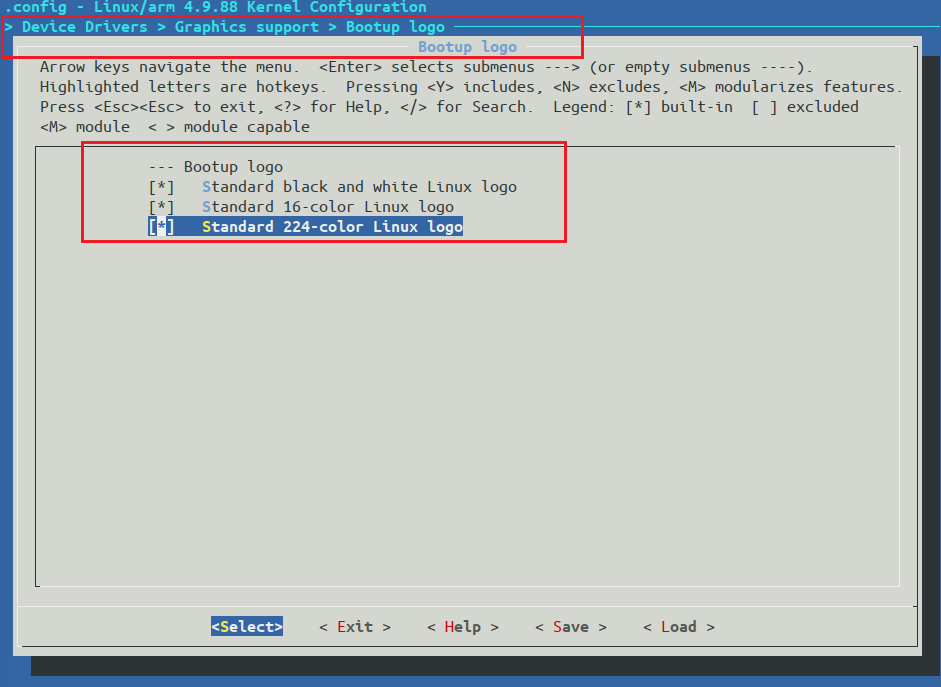
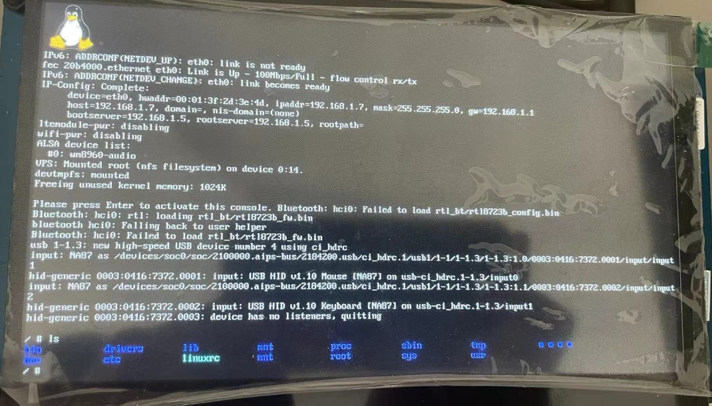

Linux-LCD驱动
Linux-LCD驱动
环境
硬件环境
- 开发板型号： 100ask_imx6ull_pro 开发板
- 处理器类型：NXP IMX6ULL
- 处理器架构：恩单核 Cortex-A7
- 处理器主频：800MHZ
- 内存容量：512 MB DDR3
- 存储介质：4GB eMMC
- 本次测试的驱动：7 寸 LCD 屏幕
软件环境
- 宿主机
- 宿主机操作系统：Ubuntu 18.04
- 交叉编译器：100ask 提供的工具链 arm-buildroot-linux-gnueabihf- 支持的最低内核版本：4.9.0
- 开发板
- U-Boot：一开始用的 NXP 官方提供的版本但不能正常启动内核，后改为 100ask 提供的版本
- 内核版本： NXP 提供的 4.9.88 版本
- 根文件系统类型：BusyBox 1.29.0
OLED 和 LCD
- OLED（Organic Light-Emitting Diode，有机发光二极管）屏幕中的每个像素点都能自发光，当电流通过时，有机材料层发光。
- OLED 屏幕响应时间更快
- OLED 不需要背光层，可以关闭对应像素发光，降低功耗
- OLED 频闪现象明显，可能会烧屏
- LCD（Liquid Crystal Display，液晶显示器）屏幕本身不发光，需要背光层来提供光源，通过控制液晶分子的转动方向来调节光线的透过，从而显示图像。
- LCD 需要背光层提供光源，功耗相对较高
- LCD 无频闪，更耐用，寿命更长
https://www.topwaydisplay.com/cn/blog/lcd-oled-microled-comparison
LCD时序参数概念
LCD 信号线
LCD 信号线有 24 根数据线均分为红色数据、绿色数据和蓝色数据，控制线有 CLK、VSYNC、HSYNC和 DE。
- CLK：同步时钟信号。
- VSYNC：垂直同步信号，也叫帧同步信号，表示液晶屏一帧像素数据的传输结束，每传输完成一帧像素数据时，VSYNC 会发生电平跳变。
- HSYNC：水平同步信号，也叫行同步信号，表示液晶屏一行像素数据的传输结束，每传输完成液晶屏的一行像素数据时，HSYNC 会发生电平跳变。
- DE：数据使能信号，表示数据的有效性，当 DE 为高电平时，RGB 信号线表示的数据有效。
LCD 数据传输时序
LCD 传输一帧图形数据的时序大致如下：

LCD 显示的图像可看作一个矩形，液晶屏有一个显示指针，它指向将要显示的像素。显示指针的扫描方向方向从左到右、从上到下，一个像素点一个像素点地描绘图形。这些像素点的数据通过 RGB 数据线传输至液晶屏，它们在同步时钟 CLK 的驱动下一个一个地传输到液晶屏中，交给显示指针，传输完成一行时，水平同步信号 HSYNC 电平跳变一次，而传输完一帧时 VSYNC 电平跳变一次。

液晶显示指针在行与行之间，帧与帧之间切换时需要延时，而且 HSYNC 及 VSYNC 信号本身也有宽度。
- VBP：垂直后肩（vertical back porch），表示一帧图像开始时，这个 VSYNC 信号以后无效的行数。
- VFP：垂直前肩（vertical front porch），表示一帧图像结束后，到下一个 VSYNC 信号无效的行数。
- HBP：水平后肩（horizontal back porch），表示 HSYNC 信号开始到一行的有效数据开始之间的 CLK 个数。
- HFP：水平前肩（horizontal front porch），表示一行的有效数据结束到下一个 HSYNC 信号开始之间的 CLK的个数。
- VSW：表示 VSYNC 信号的宽度，单位为行。
- HSW：表示 HSYNC 信号的宽度，单位为 CLK 的个数。
24. eLCDIF—液晶显示 — 野火 i.MX RT库开发实战指南——基于i.MXRT1052 文档 (embedfire.com)
Linux-LCD驱动解析
LCD 显示原理
Linux 内核驱动申请一片内存空间——Framebuffer，LCD 控制器将 Framebuffer 中的数据拷贝到 LCD 的 SRAM 上显示图像。

Framebuffer 设备
Framebuffer（fb 帧缓冲），是 Linux 内核虚拟出来的一个设备，属于字符设备类型。主要作用是为应用层提供一个统一标准接口的显示设备，通过 fb 应用程序可以直接对显存进行操作。用户不必关心物理显存的位置、换页机制等等具体细节， 这些都是由 FrameBuffer 设备驱动来完成的。
LCD 驱动编写完成后会生成一个名为 /dev/fbX(X=0~n) 的设备，NXP 官方的 Linux 内核默认已经开启 LCD 驱动了，NXP 官方的设备树已经添加了 LCD 设备节点，只是用到的 IO 口以及屏幕参数可能不同，所以我们要做的是在设备树修改成自己使用的 IO 口和屏幕参数。
LCD 设备树描述信息解析
LCD 屏幕 IO 配置
100ASK_IMX6ULL_PRO 开发板的 LCD 背光引脚、数据线、控制线均和和 NXP 开发板的一样，只有复位引脚不同，所以 IO 配置部分只需要修改复位引脚即可。
NXP 官方的设备树：imx6ul-14x14-evk.dts 文件下：
1 | pinctrl_lcdif_dat: lcdifdatgrp { |
- 子节点 pinctrl_lcdif_dat 定义了 LCD 屏幕的 24 根数据线配置项
- 子节点 pinctrl_lcdif_ctrl 定义了 LCD 屏幕的复位引脚和 4 根控制线：CLK、ENABLE、HSYNC、VSYNC
- 子节点 pinctrl_pwm1 定义了 LCD 屏幕背光 PWM 引脚配置项
NXP 官方设备树是将 GPIO5_9 作为 LCD 复位引脚，跟 100ask 开发板的复位引脚不同，在 iomuxc 节点下的 imx6ul-evk 子节点添加：
1 | pinctrl_lcdif_reset: lcdifresetgrp { |
Linux 系统如何知道引脚 PWM1_OUT 是用来控制 LCD 背光的呢？通过 backlight 节点来将 LCD 背光和引脚 PWM1_OUT 连接起来：
backlight 节点描述可以参考 Documentation/devicetree/indings/video/backlight/pwm-backlight.txt 这个文档
NXP 官方的设备树：imx6ul-14x14-evk.dts 文件下：
1 | backlight { |
- compatible = “pwm-backlight”; 在 Linux 内核中
drivers/video/backlight/pwm_bl.c文件中又具体的驱动程序 - pwms 属性用于描述背光所使用的 PWM 和 PWM 频率，5000000 表示 5000000 ns，即 5 ms，1s / 5ms = 200 Hz，即 PWM 频率为 200Hz
- brightness-levels 属性描述亮度级别，范围为0~255，0 表示 PWM 占空比为 0%，也就是亮度最低，255 表示 100% 占空比，也就是亮度最高
- default-brightness-level 属性为默认亮度级别
LCD 屏幕参数节点信息
imx6ull.dtsi 文件：定义了 LCD 节点通用信息
1 | lcdif: lcdif@021c8000 { |
这些 LCD 节点通用信息，适用于 IMX6ULL 芯片的板子，不是完整的节点信息，需要我们在自己板子上的设备树进行补充 LCD 屏幕信息。
NXP 官方的设备树：imx6ul-14x14-evk.dts，LCD 节点如下：
1 | &lcdif { |
在设备树下修改成自己的屏幕信息：
1 | &lcdif { |
运行测试
添加企鹅 logo
Linux 内核启动时显示企鹅 logo，显示表示 LCD 驱动基本正常，这个 logo 需要在 Linux 内核配置启动，一般内核是默认启动的。
Linux 内核修改：使能 Linux logo 显示，按如下路径找到配置项：
1 | Device Drivers |
如下：

默认是选择的，三个选项分别对应着黑白、16 位、24 位色彩格式的 logo。
编译设备树
1 | make dtbs |
设备修改完成后，进行编译烧录到开发板。
LCD 背光调节
设备树节点设置了 8 个等级的背光调节，可以设置为 0~7，/sys/class/backlight/backlight 目录下存放背光调节的信息：
1 | cd /sys/class/backlight/backlight |
brightness 表示当前亮度等级，max_brightness 表示最大亮度等级，使用 echo 命令可以修改屏幕亮度：
1 | echo 7 > brightness |
brigtness 为 0 的话会关闭 LCD 背光，即屏幕会熄灭。
设备 LCD 作为终端控制台
设置 uboot 启动参数
重启开发板进去 uboot 界面
1 | setenv bootargs 'console=tty1 console=ttymxc0,115200 root=/dev/nfs nfsroot=192.168.1.5:/home/router2/100ask_imx6ull-sdk/nfs_ubuntu/busybox1.29.0_rootfs,proto=tcp rw ip=192.168.1.7:192.168.1.5:192.168.1.1:255.255.255.0::eth0:off' |
- console=tty1：表示设置 LCD 屏幕为控制台
- console=ttymxc0,115200：表示设置串口为控制台
- 后面是根文件系统的目录等信息
修改根文件系统
打开根文件系统中的 /etc/inittab 文件，添加这一行
1 | tty1::askfirst:-/bin/sh |
修改完成后保存文件，重启开发板，就可以发现 LCD 屏幕上呈现系统启动信息了。
Linux 内核默认使能了 USB 键盘驱动，直接插上键盘就可以实现在 MobaXterm 软件通过串口操作开发板一样的效果了，但是 LCD 控制台还不支持中文操作，后续再进行优化。
